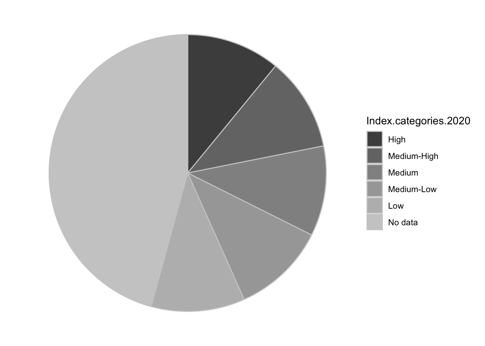
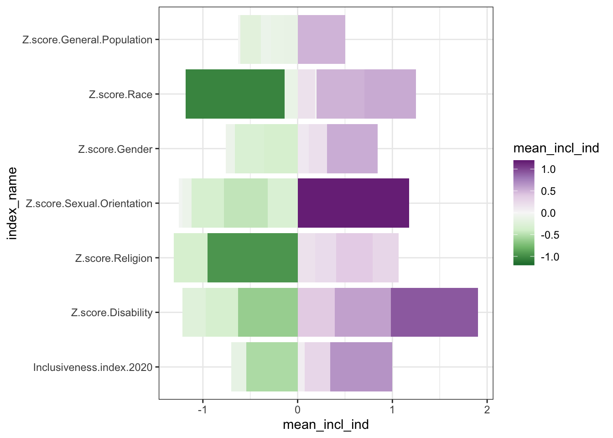

Chapter 1 Overview of common visualizations and how to read them
This book will cover how to create a variety of visualizations using R. One of the first things you should do to improve your skills creating visualizations is to become familiar with the kinds of visualizations that are possible and the different features of each.
Effective visualization design relies on a solid understanding of how data properties, visualization types, and audience characteristics interact to help people make sense of a visualization. In this chapter, we’ll look at a series of common visualization types, and we’ll break down how each is meant to be read. Understanding these basic visualization types will create a solid foundation for communicating your data science work to a broad audience.
1.1 Visualization components
As we discuss different visualizations, we will also be talking about different components within the visualizations. In figure 1.1 below, the major components of the visualization are labeled: the main title, the subtitle, the x axis title, the y axis title, the panel, the horizontal and vertical gridlines, and the axis labels and tick marks for both axes. Almost all of the visualizations we cover in this book will use these basic components.
FIGURE 1.1: Visualization components, labeled.
In this set of basic visualization components, we see two components labeled as an axis. These axes are called the x and y axes, and they always appear in these positions: the x axis always goes left to right, and the y axis always goes up and down.
1.2 Bar Chart
The bar chart is possibly the most common type of visualization. In this type of visualization, the basic shape being used to represent data values is a rectangle. In a traditional bar chart, each rectangle (or bar) has exactly the same width, and the height of the bar is representative of some data value. To create a simple bar chart, the data set should have one column that contains textual (or categorical) data and one column that contains numerical data. A common way to create these two columns is to start with one categorical data column and count the number of records for each category to create the numerical column.
FIGURE 1.2: A sample bar chart.
In the sample bar chart above, the categorical variable is displayed on the x axis and the numerical variable is displayed on the y axis. This results in a classic style of bar chart where each bar has the same width and the heights are proportionate to a data value. Each bar has a starting value of zero on the y axis. Each bar travels upward from zero and stops at the correct data value.
When reading this visualization, we are comparing the lengths of bars in order to understand patterns within the numerical data values from our data set. The power of the bar chart lies in how precisely we can detect differences in the end points of the bars. This is something that people naturally do quite well when all of the bars start at the same lowest point, or baseline.
Bar charts are especially effective if the bars that have small differences in lengths appear close to each other. In the above chart, this is accomplished by arranging the bars so they appear with the highest data values on the left and the lowest data values on the right.
FIGURE 1.3: A sample bar chart with both positive and negative values.
Here is another example of a bar chart where the data values include both positive and negative values. For data values that are negative, the bar travels downward from zero and stops at the correct data value. The x axis title and labels appear at the bottom of the panel, below the lowest data values.
For stylistic reasons, bar charts may also appear with the bars oriented horizontally instead of vertically. In that case, each bar will have the same height, and the widths of the bars will vary based on the data values. The text (or categorical) axis will then be the y axis, and the numerical axis will be the x axis.
FIGURE 1.4: A sample bar chart, with the bars oriented horizonally.
1.2.1 Variations
The following charts are variations on a bar chart. They either incorporate additional variables, change the basic shape of the chart, or both.
1.2.1.1 Lollipop plot
One quick variation of the bar chart is called the lollipop plot In a lollipop plot, the bars are replace by a long line with a circle at the end, creating something that looks like a lollipop. Apart from the different shapes used, the lollipop plot works just like a bar chart. The circles draw attention to the data value, but the lines extending to the axis reinforce the length comparisons.
FIGURE 1.5: A sample lollipop plot.
FIGURE 1.6: A sample lollipop plot with both positive and negative values.
1.2.1.2 Bar charts with color
A simple bar chart includes one categorical variable and one numerical variable. Sometimes, however, it is useful to explore the patterns in relation to a second categorical variable. Adding another categorical variable to a bar chart usually means using color to represent the extra variable.
With a stacked bar chart, the additional variable is used to segment the bars into separate, colored regions. In this example, the bar for each continent is subdivided into groups of countries based on their values for Inclusive Index.

FIGURE 1.7: A sample stacked bar chart.
With this stacked bar chart, you can still see the total number of records for each Continent, but what happens when you try to compare the different segments inside the bar chart? Starting at the bottom, it seems to work out okay. All of the bars for the “No data” category start at the same baseline (the x axis), and we can read these segments like a normal bar chart. But what happens with the “Low” segments right above them? And the “Medium-Low” segments above those? Every time we have a group of segments that aren’t lined up with each other, we have to try to guess how tall the bar is in comparison to the other bars in the group. The farther apart the segments are, the harder it is to make that comparison.
Another variation of the stacked bar chart is the “filled” stacked bar chart. Instead of using the raw counts to determine the lengths of the bars, in the filled stacked bar chart, the full bars are all stretched to have the same height, and each segment becomes the percentage of the records in each bar. (Notice how the y axis changes from “Number” to “Percentage.”) This is useful if the percentages matter more than the raw counts, but it doesn’t fix any of the concerns with comparing different segments without a common baseline.
FIGURE 1.8: A sample filled stacked bar chart.
An alternative to the stacked bar chart is called the grouped bar chart. In the grouped bar chart, every segment starts from the x axis. Each continent forms a group of bars, and each option of the Inclusiveness Index is a separate bar.
FIGURE 1.9: A sample grouped bar chart.
1.2.1.3 Dumbbell plot
Stacked and grouped bar charts show some of the limitations of bar charts for making complex comparisons. The rectangles in the bar chart take up a large amount of space. Think back to the lollipop plot, where it’s the circles that directly represent the data value. Converting bars to something like circles opens up the ability to make more direct comparisons.
For example, let’s say we want to compare two continents more directly: Asia and Europe.
FIGURE 1.10: A grouped bar chart focusing on two continents.
This chart groups all of the segments by continent, which makes it easy to compare different Index categories within a single continent. What if we want to bring more attention to the difference between continents for each category? We could always switch which category is the primary division on the x axis and which is represented by color.
FIGURE 1.11: The same grouped bar chart with a different arrangement of the categorical variables.
This improves our ability to compare the continents directly because the bars are directly next to each other. The amount of space the bars take up is still pretty large, though. If we combine this chart with something like a lollipop plot, we get one last variation: a dumbbell plot.
With a dumbbell plot, we use a circle to represent the data values, just like the lollipop. Instead of having a line that extends all the way to the axis, though, we use a line to connect the two dots in each category of Inclusiveness Index.
FIGURE 1.12: A dumbbell plot comparing two continents.
With a dumbbell plot, there are three main trends we can explore in the chart. We can focus on the green circles to see the pattern in the Asia data values. We can focus on the blue circles to see the pattern in the Europe data values. Finally, we can focus on the lengths of the lines connecting the circles to compare the continents at each level of the Inclusiveness Index. This chart time is an efficient way to compare these data values, but remember that it can be difficult to compare the lengths of shapes when they don’t have the same baseline.
1.3 Scatter Plot
The scatter plot is another common visualization type. This type of visualization displays one circle for each record in the data set. The position of the circle is based on the values of two different numerical variables, one of which is associated with the x axis and the other of which is associated with the y axis.
FIGURE 1.13: A sample scatter plot.
This visualization is a way to show a relationship between the two numerical variables displayed on the axes. A relationship between the variables means that a change in one variable would predict a specific kind of change in the other variable. For example, one kind of relationship is a positive correlation, which means that an increase in one variable is associated with an increase in the other variable. Points with higher values on the x axis tend to have higher values on the y axis. Similarly, points with lower values on one axis tend to have lower values on the other axis.
When two numerical variables have a positive correlation, it shows up on the scatter plot as a diagonal pattern of circles, from the bottom left corner of the chart to the upper right corner of the chart. The closer it looks to a straight line, rather than a diffuse pattern, the stronger the relationship is.
There are a few types of patterns that might show up when looking at a scatter plot. Instead of a positive correlation, the variables could have a negative correlation: high values of one variable are associated with low values of the other variable. This relationship shows up on the scatter plot as a diagonal patter from the top left corner to the bottom right corner.
Both positive and negative correlations are linear relationships - they look like lines on the chart. There are also nonlinear relationships that look like different kinds of curves. An exponential relationship looks like a curve that starts mostly horizontal and then curves up dramatically, ending up almost vertical. A logarithmic relationship is a curve that starts mostly vertical and bends over dramatically, ending up almost horizontal. Other curvilinear patterns of dots might be better represented by other mathematical functions.
FIGURE 1.14: Different relationships between numerical variables.
What does it mean to see a shape in a scatter plot? A detectable shape in a scatter plot is a suggestion that there might be a statistically powerful relationship between these variables. The chart, however, is not a substitute for a statistical analysis. Using statistical analyses to explore the relationship between two variables is called modeling.
Sometimes a scatter plot will be combined with a statistical model to explore the connection between the data points and an ideal relationship. For example, you may see a scatter plot where there is a correlation between the variables combined with a linear model (represented by a straight line drawn on top of the points).
FIGURE 1.15: A sample scatter plot with a linear model overlaid over the points.
When you see a line on a scatter plot like this, it is showing the linear model that best represents the relationship between the x and y variables. In this case, the relationship between the variables is not very strong, so the points look more like a cloud than the straight line of the linear model.
1.3.1 Variations
The following charts are variations on a scatter plot. They either summarize the patterns in the data or incorporate additional variables.
1.3.1.1 Contour or density plot
Sometimes a dataset is too large for a scatter plot to be effective. With a large number of data points, there can be too much overlap between the circles to see the dominant patterns. In this instance, it can be helpful to calculate the density of data points across the chart and visualize the density instead of (or in addition to) the points. This is called a contour or density plot.
FIGURE 1.16: A sample contour plot with scatter plot points on top.
1.3.1.2 Binned scatter plot
In a contour plot, the density calculation detects regions of high density in a scatter plot. Another way of summarizing the distribution of points across the plot is to divide the plot into an even grid and then to count the points inside each region. This is often called “binning.” Common types of binning are rectangular (splitting the plot up using a rectangular grid) and hexagonal (splitting the plot up using a grid of interlocking hexagons).
FIGURE 1.17: A sample scatter plot binned with a rectangular grid.
FIGURE 1.18: A sample scatter plot binned with a hexagonal grid.
1.3.1.3 Scatter plot with color
So far, our scatter plots have still only been used to visualize the relationship between two numerical variables. In some datasets, it can be helpful to consider how an additional variable interacts with the scatter plot pattern. One way to incorporate an additional variable is to change the color of the points in the scatter plot according to the third variable. For example, you can associate the color of the points with a categorical variable to show whether different subsets of the points cluster in different parts of the graph.
FIGURE 1.19: A sample scatter plot with color categories.
In the above chart, the color represents the continent; that is, each continent shows as a separate color. We’re looking for a relationship between the pattern of the colors and the spatial pattern of the points. In this chart, the points associated with Europe do overall seem to cluster in the upper-right corner of the graph, meaning that on the whole the European countries tend to rate highly on both the Z-score value for religious inclusiveness and the overall inclusiveness score. African countries also tend to have high scores for religious inclusiveness, but they don’t rate as highly for overall inclusiveness.
You can also use color to visualize a third numerical variable instead of a categorical variable.
FIGURE 1.20: A sample scatter plot with a color gradient.
In this chart, the values in the “Z-score, Gender” variable are associated with a color gradient. Positive values of this new variable show in the chart as increasingly darker shades of purple. Negative values show as increasingly darker shades of green.
With any chart, adding more variables runs the risk of creating visual confusion that makes it harder (not easier) to see interesting patterns. For example, in the chart above, we see that purples mostly occur on the top half of the chart and greens on the lower half of the chart. Beyond that, though, it’s hard to identify a strong relationship between the strength of the color values and either of the axes. If colors are not concentrating in a particular region of the plot, adding a third variable may not be necessary for this chart.
1.3.1.4 Bubble chart
A bubble chart is another way of adding a third variable to a scatter plot. Unlike adding color to the chart, however, a bubble plot works best when you are adding a third numerical variable. That’s because in a bubble plot, the additional variable is represented by changing the size of the bubble. Representing a categorical variable by changing the size of the circle isn’t as natural as using different colors. It’s hard to focus on all of the bubbles of a particular size to try to identify clusters.
FIGURE 1.21: A sample bubble chart with categories.
If you use a numerical variable to size the bubbles, the goal of the chart becomes similar to when color is used to add a third numerical variable: explore whether the sizes of the bubbles changes in a meaningful way in relation to the axes.
FIGURE 1.22: A sample bubble chart with a size gradient.
There is one property of bubble charts that is different from scatter plots with added color. When you have a variable that has both positive and negative values, it may be a slightly less natural fit for the size of the bubbles. The size of an object like a circle is naturally a positive value. A circle doesn’t itself have negative size. If the variable uses negative and positive in an abstract sense, though, the size of a bubble can still help differentiate low and high values.
With bubble charts, color is still available to display another variable if there is anything else that might interact with the three numerical variables.
FIGURE 1.23: A sample bubble chart with color categories.
Be cautious, again, with adding too many variables to a single chart. If adding a variable doesn’t reveal anything new about the data, it is probably getting in the way of a pattern that does exist.


1.6 Heat Map
## `summarise()` has grouped output by
## 'Index.categories.2020'. You can override using the
## `.groups` argument.## Warning: Unknown levels in `f`:
## Inclusiveness.index.2020
1.7 Histogram
## `stat_bin()` using `bins = 30`. Pick better value
## with `binwidth`.
1.7.1 Variations
1.7.1.1 Dot plot
## Bin width defaults to 1/30 of the range of the data. Pick better value with `binwidth`.
1.7.1.2 Frequency Polygon
## `stat_bin()` using `bins = 30`. Pick better value
## with `binwidth`.
## `stat_bin()` using `bins = 30`. Pick better value
## with `binwidth`.